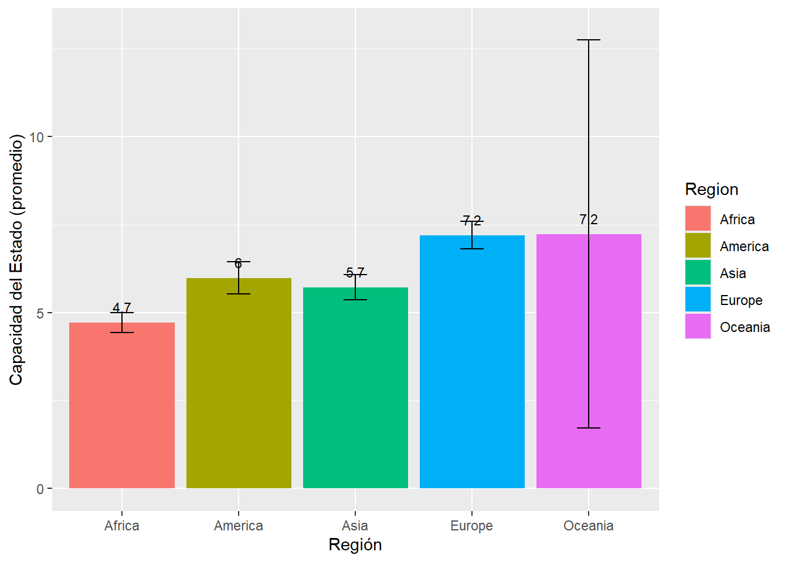
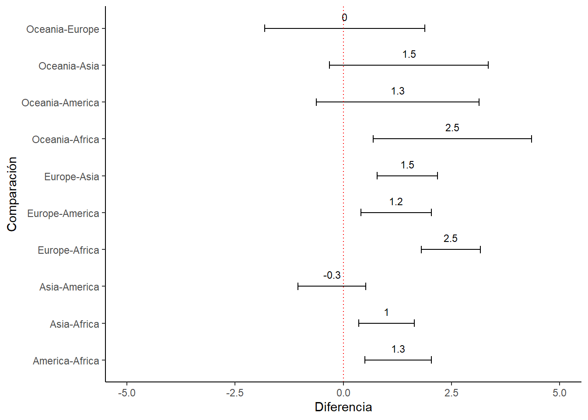
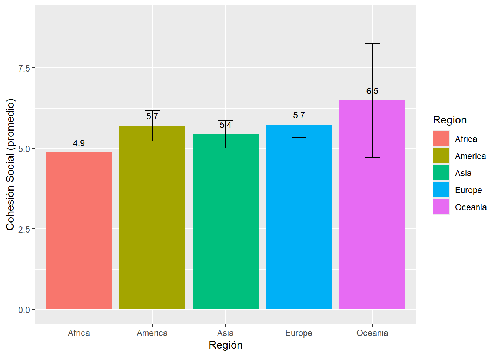
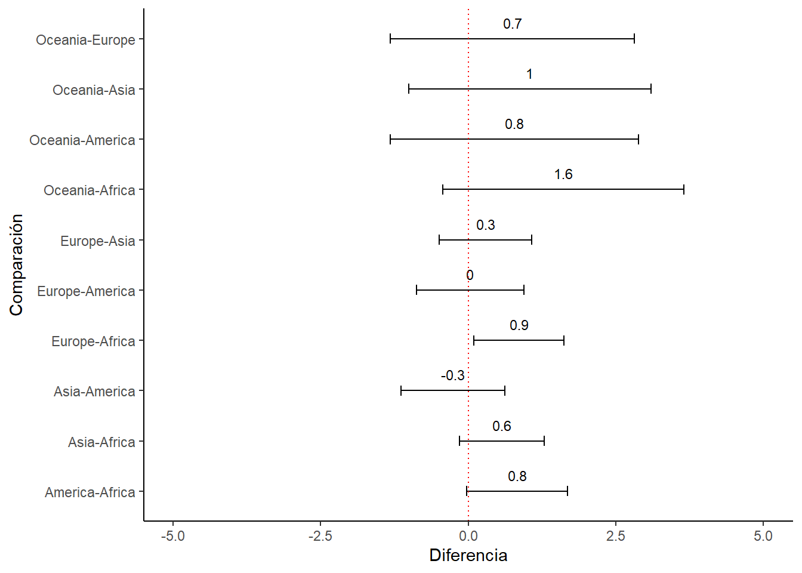

Práctica dirigida 7

FACULTAD DE CIENCIAS SOCIALES - PUCP
Curso: POL 278 - Estadística para el análisis político 1 | Semestre
2024 - 2
library(rio)
library(dplyr)
library(lsr)
library(ggplot2)ANOVA
¿Qué es el Análisis de Varianza (ANOVA)?
Es una prueba estadística que permite comparar la media (promedio) de más de 2 grupos. Es decir, es como una prueba T, pero de más de dos grupos.
Al igual que con la prueba T, en esta oportunidad debemos observar el p-value de la prueba. Para ello, se establecen 2 hipótesis:
- H0 (p-value > 0.05): no hay diferencia significativa entre las medias de ningún grupo.
- H1 (p-value =< 0.05): al menos una media poblacional (de un grupo) es significativamente distinta a las otras
Estadístico F
Indica la variablidad entre grupos y dentro de un mismo grupo.
- Si F es grande, hay mucha variabilidad entre grupos y poca variabilidad dentro de un mismo grupo.
- Si F es pequeño, hay poca variabilidad entre grupos pero mucha variabilidad dentro de un mismo grupo.
Prueba Tukey
Prueba “post-hoc” (luego de), realizada para revisar entre qué grupos existe una diferencia significativa.
OJO: como es una prueba complementaria a la ANOVA, solo resulta necesaria si se rechaza la H0 en ANOVA. Si la H0 no se rechaza en ANOVA, no hay necesidad de hacer prueba Tukey.
Al igual que las otras pruebas estadísticas, se debe ver el p-value en cada emparejamiento.
Fortaleza de los Estados
Usaremos la base de datos del Índice de resiliencia de los Estados de 2022 (última medición), elaborado por The Fund for Peace (https://www.fundforpeace.org/). La BD se ha adaptado para esta sesión.
library(rio)
sri=import("SRI_2022.xlsx")¿Existe diferencias en la capacidad del Estado, según la región?
Realicemos primero un análisis exploratorio y descriptivo.
#Países analziados por región
table(sri$Region)##
## Africa America Asia Europe Oceania
## 49 24 43 35 3Y veamos ahora la capacidad del Estado por continente con algunos estadísticos descriptivos e inferenciales
library(tidyverse)## Warning: package 'tidyr' was built under R version 4.3.3## Warning: package 'readr' was built under R version 4.3.3## Warning: package 'purrr' was built under R version 4.3.3## Warning: package 'stringr' was built under R version 4.3.3## Warning: package 'lubridate' was built under R version 4.3.3## ── Attaching core tidyverse packages ──────────────────────── tidyverse 2.0.0 ──
## ✔ forcats 1.0.0 ✔ stringr 1.5.1
## ✔ lubridate 1.9.3 ✔ tibble 3.2.1
## ✔ purrr 1.0.2 ✔ tidyr 1.3.1
## ✔ readr 2.1.5
## ── Conflicts ────────────────────────────────────────── tidyverse_conflicts() ──
## ✖ dplyr::filter() masks stats::filter()
## ✖ dplyr::lag() masks stats::lag()
## ℹ Use the conflicted package (<http://conflicted.r-lib.org/>) to force all conflicts to become errorslibrary(lsr)
tabla1 = sri %>%
group_by(Region) %>%
summarise(Media = mean(State_Capacity, na.rm = T),
Mediana = median(State_Capacity, na.rm = T),
Desviacion = sd(State_Capacity, na.rm = T),
Inferior = ciMean(State_Capacity, na.rm = T)[1],
Superior = ciMean(State_Capacity, na.rm = T)[2])
tabla1## # A tibble: 5 × 6
## Region Media Mediana Desviacion Inferior Superior
## <chr> <dbl> <dbl> <dbl> <dbl> <dbl>
## 1 Africa 4.72 4.75 0.982 4.43 5.00
## 2 America 5.98 5.89 1.08 5.53 6.44
## 3 Asia 5.72 5.81 1.17 5.36 6.08
## 4 Europe 7.20 7.53 1.13 6.81 7.59
## 5 Oceania 7.24 8.45 2.22 1.72 12.8Veámoslo en gráfico
library(ggplot2)
ggplot(tabla1, aes(x=Region, y=Media, fill = Region))+
geom_bar(stat="identity")+
geom_errorbar(aes(ymin=Inferior, ymax=Superior), width=0.2)+
geom_text(aes(label=paste(round(Media, 1))), vjust=-1, size=3)+
xlab("Región") + ylab("Capacidad del Estado (promedio)")+
ylim(0, 13)
A partir del gráfico, es posible identificar que existe una diferencia significativa entre Europa y otras regiones (menos Oceanía). Corroborémoslo con la prueba ANOVA.
anova1 = aov(sri$State_Capacity ~ sri$Region)
summary(anova1)## Df Sum Sq Mean Sq F value Pr(>F)
## sri$Region 4 133.4 33.36 26.96 <2e-16 ***
## Residuals 149 184.3 1.24
## ---
## Signif. codes: 0 '***' 0.001 '**' 0.01 '*' 0.05 '.' 0.1 ' ' 1Observamos que el p-value es menor a 0.05, lo que significa que al menos un grupo tiene la media estadísticamente significativa respecto del resto.
Para saber qué media es distinta, aplicamos la prueba Tukey.
comparacion = TukeyHSD(anova1)
comparacion## Tukey multiple comparisons of means
## 95% family-wise confidence level
##
## Fit: aov(formula = sri$State_Capacity ~ sri$Region)
##
## $`sri$Region`
## diff lwr upr p adj
## America-Africa 1.26653559 0.5012878 2.0317834 0.0000983
## Asia-Africa 1.00286667 0.3610574 1.6446759 0.0002771
## Europe-Africa 2.48399952 1.8042453 3.1637537 0.0000000
## Oceania-Africa 2.51944263 0.6926581 4.3462272 0.0018811
## Asia-America -0.26366892 -1.0462726 0.5189347 0.8846982
## Europe-America 1.21746393 0.4034522 2.0314757 0.0005699
## Oceania-America 1.25290703 -0.6279681 3.1337821 0.3549717
## Europe-Asia 1.48113284 0.7818975 2.1803682 0.0000003
## Oceania-Asia 1.51657595 -0.3175467 3.3506986 0.1560736
## Oceania-Europe 0.03544311 -1.8122995 1.8831857 0.9999982Viendo el p-value (p adj) < 0.05, podemos ver que existe diferencia significativa entre las siguientes medias:
- América y África
- Asia y África
- Europa y África
- Oceanía y África
- Europa y América
- Europa y Asia
Veámoslo en un gráfico
#Primero debemos convertir la tabla de Tukey en DF
comparacion.df = as.data.frame(comparacion[1])
comparacion.df$comparacion = rownames(comparacion.df)Grafiquemos
ggplot(comparacion.df, aes(x=comparacion, y=sri.Region.diff))+
geom_errorbar(aes(ymin=sri.Region.lwr, ymax=sri.Region.upr), width=0.2)+
geom_text(aes(label=paste(round(sri.Region.diff, 1))), vjust=-1, size=3)+
xlab("Comparación") + ylab("Diferencia")+
ylim(-5, 5) +
coord_flip() +
geom_hline(yintercept = 0, color = "red", linetype="dotted") +
theme_classic()
¿Cómo interpretamos el gráfico? Solo hay diferencia significativa en aquellas medias cuya diferencia no pasa por el 0 (línea roja o del color que ustedes escojan)
Ya hemos visto que existe diferencia en la media de capacidad estatal entre ciertas regiones. Ahora, ¿sucede lo mismo con la cohesión social?
Descriptivos e inferenciales
tabla2 = sri %>%
group_by(Region) %>%
summarise(Media = mean(Social_Cohesion, na.rm = T),
Mediana = median(Social_Cohesion, na.rm = T),
Desviacion = sd(Social_Cohesion, na.rm = T),
Inferior = ciMean(Social_Cohesion, na.rm = T)[1],
Superior = ciMean(Social_Cohesion, na.rm = T)[2])
tabla2## # A tibble: 5 × 6
## Region Media Mediana Desviacion Inferior Superior
## <chr> <dbl> <dbl> <dbl> <dbl> <dbl>
## 1 Africa 4.88 4.89 1.23 4.53 5.23
## 2 America 5.71 5.61 1.12 5.24 6.18
## 3 Asia 5.45 5.39 1.41 5.01 5.88
## 4 Europe 5.74 5.32 1.16 5.34 6.14
## 5 Oceania 6.49 6.43 0.711 4.72 8.25En gráfico
library(ggplot2)
ggplot(tabla2, aes(x=Region, y=Media, fill = Region))+
geom_bar(stat="identity")+
geom_errorbar(aes(ymin=Inferior, ymax=Superior), width=0.2)+
geom_text(aes(label=paste(round(Media, 1))), vjust=-1, size=3)+
xlab("Región") + ylab("Cohesión Social (promedio)")+
ylim(0, 9)
Y hagamos ANOVA
anova2 = aov(sri$Social_Cohesion ~ sri$Region)
summary(anova2)## Df Sum Sq Mean Sq F value Pr(>F)
## sri$Region 4 23.21 5.804 3.75 0.00616 **
## Residuals 149 230.62 1.548
## ---
## Signif. codes: 0 '***' 0.001 '**' 0.01 '*' 0.05 '.' 0.1 ' ' 1El p-value < 0.05, por lo cual se concluye que al menos una media regional o poblacional es significativamente distinta.
Complementemos con la prueba Tukey
comparacion2 = TukeyHSD(anova2)
comparacion2## Tukey multiple comparisons of means
## 95% family-wise confidence level
##
## Fit: aov(formula = sri$Social_Cohesion ~ sri$Region)
##
## $`sri$Region`
## diff lwr upr p adj
## America-Africa 0.82908292 -0.02688190 1.6850478 0.0626024
## Asia-Africa 0.56819693 -0.14969620 1.2860901 0.1908487
## Europe-Africa 0.85909423 0.09875792 1.6194305 0.0182082
## Oceania-Africa 1.60817860 -0.43516384 3.6515210 0.1955777
## Asia-America -0.26088599 -1.13626414 0.6144922 0.9231737
## Europe-America 0.03001131 -0.88049826 0.9405209 0.9999843
## Oceania-America 0.77909567 -1.32474954 2.8829409 0.8445866
## Europe-Asia 0.29089730 -0.49122956 1.0730242 0.8424952
## Oceania-Asia 1.03998167 -1.01156883 3.0915322 0.6287254
## Oceania-Europe 0.74908436 -1.31770063 2.8158694 0.8546129Diferencias significativas:
- Europa y África
Grafiquemos ahora
#Primero debemos convertir la tabla de Tukey en DF
comparacion2.df = as.data.frame(comparacion2[1])
comparacion2.df$comparacion2 = rownames(comparacion2.df)Grafiquemos
ggplot(comparacion2.df, aes(x=comparacion2, y=sri.Region.diff))+
geom_errorbar(aes(ymin=sri.Region.lwr, ymax=sri.Region.upr), width=0.2)+
geom_text(aes(label=paste(round(sri.Region.diff, 1))), vjust=-1, size=3)+
xlab("Comparación") + ylab("Diferencia")+
ylim(-5, 5) +
coord_flip() +
geom_hline(yintercept = 0, color = "red", linetype="dotted") +
theme_classic()
Una vez más, se observa que solo la línea Europa-África no pasa por el 0.
Ejercicio para la casa ¿Existe diferencia significativa en el índice de resiliencia estatal total (Variable Capacity), según región?